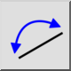

Obrátit
Panel nástrojů / Ikona:


Nabídka: Úpravy > Obrátit
Zkratka: R, V
Příkazy: reverse | rv
Panel nástrojů / Ikona:


Tento nástroj obrátí směr všech vybraných prvků čáry, oblouku a oblouku elipsy. To je užitečné hlavně pro výkresy, které se připravují pro další zpracování (např. CAM).